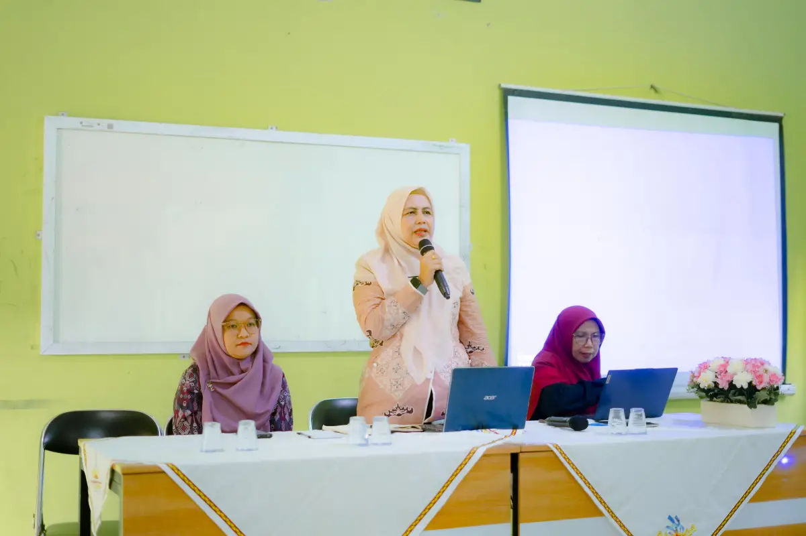

JUARA
JUJUR ▪ UNGGUL ▪ AKTIF ▪ RELIGIUS ▪ ANDAL
JUJUR ▪ UNGGUL ▪ AKTIF ▪ RELIGIUS ▪ ANDAL

Metro, 8 Juni 2026 – Sebagai bagian dari upaya penguatan pembangunan Zona Integritas dan penerapan tata kelola yang baik, SMK Negeri 3 Metro melaksanakan kegiatan Sosialisasi Penanganan Benturan Kepentingan kepada seluruh guru dan tenaga kependidikan pada Senin, 8 Juni 2026.
selengkapnya
Pelaporan pelanggaran (Whistle Blowing System) adalah pengungkapan tindakan pelanggaran atau pengungkapan perbuatan yang melawan hukum, perbuatan tidak etis/tidak bermoral atau perbuatan lain yang dapat merugikan organisasi maupun pemangku kepentingan yang dilakukan oleh pejabat/pegawai kepada pimpinan atau lembaga lain yang dapat mengambil tindakan atas pelanggaran tersebut.
selengkapnya
Metro, 4 Juni 2026 – SMK Negeri 3 Metro melaksanakan kegiatan Sosialisasi Zona Integritas kepada Orang Tua/Wali Siswa pada Kamis, 4 Juni 2026. Kegiatan ini merupakan bagian dari komitmen sekolah dalam mendukung pembangunan Zona Integritas menuju lingkungan pendidikan yang bersih, transparan, akuntabel, serta berorientasi pada pelayanan publik yang berkualitas.
selengkapnya
Technical Meeting Cabang LPBB dan Senam Pramuka Dalam rangka mempersiapkan pelaksanaan lomba pada kegiatan KNTHREE FEST 2026 yang diselenggarakan oleh SMK Negeri 3 Metro, panitia akan mengadakan Technical Meeting untuk cabang lomba LPBB (Lomba Peraturan Baris-Berbaris) dan Senam Pramuka. Technical Meeting ini bertujuan untuk memberikan penjelasan terkait teknis perlombaan, peraturan, sistem penilaian, tata tertib peserta, serta menjawab pertanyaan dari masing-masing perwakilan tim agar pelaksanaan lomba dapat berjalan tertib dan lancar.
selengkapnya